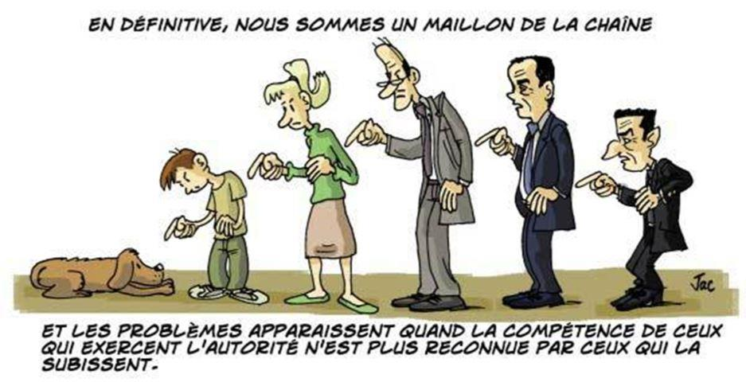
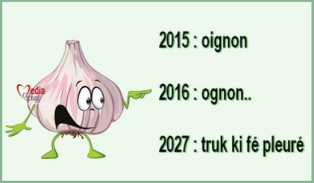
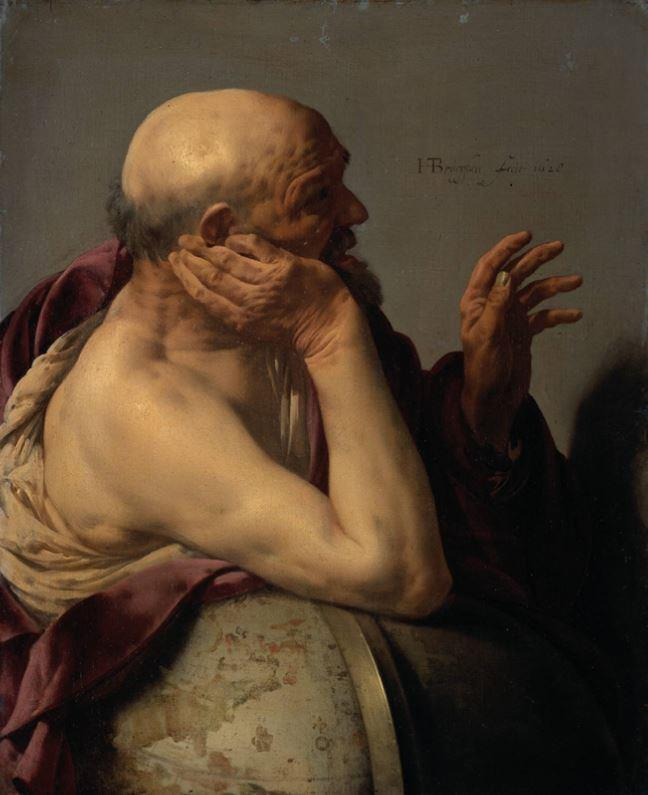

J'apprends que l'Académie française, souvent mieux inspirée, chasse de son dictionnaire le mot « assoter ».
Ce mot avait l'avantage de dire, mieux que la formule « rendre sot », cet assaut de sottise, cette sottise offensive et offensante, cette sottise qui assaille et dont la télévision, les débats publics, la publicité et la religion même, lorsqu'elle tombe aux mains d'effroyables barbares vaniteux, usent à notre détriment.
Se laisser assoter n'est rien d'autre que se laisser vaincre. On nous assote par la veulerie et la frayeur, la distraction et le travail, par l'ignorance et par le bourrage de l'information, par les généralités idéologiques et par les potins, par la musique d'ambiance et par le vacarme des rues, par la désolation des centres commerciaux et la puanteur de l'air, et même par les bons sentiments. Épargnons-nous d'étendre la liste, chacun sait, ou devrait savoir, ce qu'il en est.
Un homme assoté est un homme qui, littéralement, ne sait plus où il en est, c'est dire qu'il ne sait d'où il vient ni où il va. La réminiscence et le projet lui sont également interdit, - sinon un projet commercial, ou de carrière, dont l'horizon est un plan de retraite, - et plus interdite encore la présence d'esprit et la présence réelle.
Le voici énervé, au sens étymologique, exactement privé du nerf qui lui permettrait de se ressaisir, - de se ressaisir dans un monde sans lequel il n'est rien : cette belle civilisation blessée, européenne, avec ses langues et ses œuvres, qui se délite de moins en moins lentement dans la stupeur et dans l'oubli.
Un homme assoté est sans défense ; on peut lui faire dire et lui dire de faire n'importe quoi. Depuis qu'elle est devenue l'ennemie de sa propre civilisation, notre société est devenue une assourdissante machine à assoter. Voici donc les écrans, qui instillent la torpeur et la terreur ; voici la publicité qui nous incline à cesser de désirer sinon ce qu'elle veut vendre ; voici l'Économie, qui dissout toute chose concrète en abstraction ; et voici la morale, une certaine morale, qui sert aux vils et aux ineptes de prétexte à l'abaissement de toute vertu, au sens antique, et de tout génie.
L'assoté tire fierté de son assotement, il s'en vante, s'en revendique contre ce qui subsiste encore vaguement, ici et là, d'une exigence aristocratique, d'un pouvoir de l'excellence, d'une générosité perdue. Les Grands Assotés nous gouvernent et se font élire au titre de Grands Assoteurs. La table rase est leur horizon, leur promesse. Rien ne doit demeurer de ce qui nous laissait le loisir de n'être pas assotés. Ni le silence, ni la vastitude, ni la solitude conquise, ni même l'orthographe ou la grammaire, ni rien de ce qui permettait de discerner, de reconnaître ou de comprendre. Le propre de l'assoté est de n'exister que dans le flou, le confus, l'indiscernable et l'interchangeable, et la fonction de l'Assoteur est de l'y maintenir. Sur ce point, on ne saurait dire qu'il lésine. Tout lui est bon, et il ne manque jamais de se féliciter des concours et des complicités les plus infâmes dans ce travail qui est un combat contre les moindres scintillements de l'esprit et les plus douces rumeurs de l'âme des peuples ou des individus.
Des qualités qui n'ont, à première vue, pas de rapport direct avec l'exercice de l'intelligence, tombent également sous sa vindicte car les Grands Assoteurs savent bien que leur règne est déjà menacé par le bon sens et le bon cœur, par la beauté simple des êtres et des choses et par le pressentiment de la merveille qui se laisse deviner, entre la forêt la clairière, par chaque matin qui recommence le temps dans l'ordre des jours.
Aussi bien les Grands Assoteurs nous voudront-t-il non seulement ineptes, sans grammaire ni logique, mais aussi, et surtout, tristes et sans recours, moroses et sans élans, assignés à notre sottise comme l'âne attaché au piquet et qui tourne à s'y étrangler.
L'Assoteur étant lui-même passablement assoté, ses ruses sont elles-mêmes assez sottes et n'opèrent, par bonheur, que sur des esprits déjà enclins à la sottise. L'une d'elle consiste à dire et redire sans cesse, jusqu'à atteindre une sorte d'état hypnotique, que les rares heureux qui entendent résister à l'assotement ne le sont que par méchanceté, - le « méchant », en jargon d'assoteur (qui n'a cure d'exactitude historique) étant nommé « réactionnaire » ou « fasciste ». Il est vrai que certains, et certaines, sont bien méchants de ne pas se laisser assoter, de faillir au « comme il faut », tels ces enfants que l'on place communément aux Etats-Unis sous neuroleptiques pour avoir été « méchants », autrement dit, indociles.
La docilité ne s'invente pas, elle se prédispose. La remontrance ni la punition ne suffisent à rendre docile un indocile. Pour réduire vraiment les hommes à la servitude, il faut que l'Assoteur la leur serve volontaire, sous l'appellation de « démocratie ». Pour qu'elle puisse affirmer son âpre et mesquine force, il faut réduire l'espace où respirent l'âme et le corps qui portent l'esprit ; il faut désanimer et désincarner.
A cet égard, la technique est une arme de choix, mais non la seule. Ce que veut la technique n'est jamais qu'un accomplissement de la volonté qui nous chasse de nos terres, de nos ciels et rend ainsi incompréhensibles les Symboles qui, naguère encore, opéraient à ces fulgurantes jonctions entre le visible et l'invisible dont resplendit le monde lorsqu'il est non plus utilisé mais contemplé.
Pour chasser les hommes de ce qu'ils sont, là où ils sont, il faut vider leur mémoire de tous les signes et intersignes, œuvres et chants qui leur rappellent leur provenance et leur donnent la chance d'une destination.
L'Ennemi frappe au plus vif, pour le nécroser, et ce plus vif, au commencement, est notre langue natale par laquelle toute sapience nous vient et coule de source.
Pour l'Assoteur, dans sa version pédagogiste par exemple, il ne suffit pas que la langue s'appauvrisse, s'altère, il faut l'atteindre, à travers ses usages, dans ses règles mêmes afin d'accroître, autant que se peut, la confusion des esprits et rendre étrangères au premier regard les œuvres antérieures à ses calamiteuses réformes orthographiques et grammaticales.
Ne lui disputons point cette compétence, l'Assoteur connaît son travail : éloigner ce qui vivifie ; rendre incompréhensible ce qui avive l'âme; précipiter les esclaves par destination dans la distraction et la tristesse; couper court, au nom de la morale, non celle des Moralistes mais celle, sinistre et envieuse, des moralisateurs, à tout instinct de révolte. Lors, le compte est bon. Il n'est plus de bonheur que celui qu'on achète, d'autre joie qu'imposée, et la pensée calculante trouve son règne sans partage.
Il n'est pas nécessaire de verser dans quelque nietzschéisme caricatural pour se rendre à l'évidence : un combat est mené contre notre puissance qui serait, si elle parvenait à s’épanouir, bonté et beauté. Ce combat est celui du pouvoir contre la puissance. Les hommes de pouvoir sont mus par l’envie. Les hommes de puissance le sont par la générosité et le don. La fonction du pouvoir est d’exercer contre la puissance une procédure vengeresse. Le pouvoir, pour s’étendre, doit répandre la tristesse et l’ennui, la confusion morose et l’hébétude, et, certes, il ne peut le faire sans l’immense armée supplétive constituée par les arriérés, barbares, énervés et déprimés de toutes sortes qui sont là pour diffuser partout où ils se trouvent la crainte d’autrui et le dégoût de soi. Ce sont eux qui, sitôt sortons-nous le nez de la boue, s’efforcent de nous convaincre que nos efforts sont vains, que notre cause est perdue et que nous sommes déjà vaincus.
N’en croyons rien ! Si la défaite et la mort sont au bout du combat, elles ne le sont qu’au bout, à la fin, dans les hiéroglyphes des fins dernières, comme toute vie connait sa fin, étant naturellement cernée par la mort. Ce qu’ils veulent de nous, ces apôtres du néant, c’est notre mort, non à la fin, mais dans les heures mêmes de la vie ; ce qu’ils convoitent, c’est notre défaite suscitée par leur seul récri indigné, notre soumission d’emblée, sans conditions.
Dès lors que nous comprenons que toute grande politique s’ordonne et s’est toujours ordonnée à la poésie, dès lors que notre stratégie se fonde sur Homère, la Bhagavad-Gîta et la Geste arthurienne plutôt que sur un stage « force de vente », la souveraineté nous demeure, sinon dans le temps de l’usure, mais, irréfragable, dans le temps du chant.
La seule défaillance fatale serait que le temps du chant, le temps des Muses, le temps du frémissement ardent, en lui, de l’éternité dont il est l’image mobile, cédât au temps de l’usure, - cette abstraction linéaire qui ne correspond à rien, ni dans la réalité de l’âme, ni dans celle du cosmos.
Dans le temps du chant s’éveillent et dansent toutes nos fidélités. Celles-ci ne sont pas des douairières acariâtres mais de jeunes silhouettes surgies des sylves et de l’écume. Elles ne nous relient pas à un passé embaumé, naturalisé ou « muséal » mais à l’éternité toute vive, rimbaldienne, de « la mer allée avec le soleil ». Fidélités ondoyantes, et non pas règlementaires, elles portent vers nous un parfum de prairies et de soleil, un sacré qui s’éprouve avant que nous fussions contraints d’y croire, un arc tendu, écharpe d’Iris, entre le visible et l’invisible.
En résistant à la guerre totale que la société, désormais, conduit contre la civilisation qu’elle devrait protéger et chérir, en refusant de nous laisser assoter, nous ne sauverons pas seulement une esthétique, une morale et une mémoire, mais ce secret même de l’être qui se nomme le possible.
On nous ressasse que « tout a été dit », que la conscience européenne de l’être est achevée, figée, que l’art est mort et qu’il ne nous reste plus qu’à nous soumettre aux plus tristes fatalités. « Tout a déjà été dit », on nous le disait déjà avant Proust, Céline, Ezra Pound ; on nous le disait même avant Chateaubriand et Hugo. Sans doute le disait-on déjà avant Dante et même Virgile. Ce « tout a été dit » trahit surtout le manque d’imagination créatrice de celui qui le formule. Cette formule décourageante veut nous dire qu’ici, en Europe, tout est dit, et qu’il n’y a plus qu’à s’abandonner à la plus ostensible barbarie, à vouloir s’en rédimer en disparaissant. Un idéologue ou un journaliste s’en laisseront aisément convaincre. Il sera plus difficile d’en persuader un poète ou un homme d’action, - qui savent que de bien-pensants journalistes peuvent parler de tout sans rien dire du tout. Ce qui est véritablement dit vient de loin, de si loin que ceux qui parlent de tout n’en ont plus la moindre idée, et, littéralement, ne l’entendent pas.
Non seulement tout n’a pas été dit, et tout n’est pas dit, mais ce qui fut dit n’a pas même encore été entendu ni éprouvé dans sa plénitude, ce qui est dit n’est pas encore advenu au dire. Les milliers de travaux universitaires qui ont pratiqué sur les œuvres leurs médecines légales « textuelles » ne changent rien, bien au contraire, au fait troublant que les grands œuvres, ces événements de l’âme attendent encore leur avènement dans nos âmes. Virgile, Dante, Hölderlin, Nerval attendent dans la pénombre pour nous dire ce qui doit encore être dit, pour susciter en nous le ressouvenir, « par-delà les portes de cornes et d’ivoire ».
Les œuvres de la conscience européenne de l’être sont en attente, en puissance, et c’est contre elles qu’un Dédire universel, - que la démonologie expliquerait bien mieux que la sociologie,- travaille sans relâche ; et c’est par elles, ces œuvres, qui sont attentes ardentes, que la puissance et le possible nous reviendront dans le plus beau des printemps.
Ainsi que dans le véritable amour, nous reprendrons tout au début, avant les défaillances et les trahisons, là où pointe la vérité de l’être, en sa fragilité émouvante de la jeune corolle.
Nous passerons outre aux fastidieuses dérisions des lassés et des blasés. Parménide, Héraclite et Empédocle nous diront le secret de l’être et du feu, comme à des amis, au plus près de ce que nous éprouvons immédiatement, dans la senteur des aromates jetés au feu par notre belle nuit ourlée de la rumeur des flots.
Partager cette page